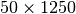
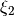
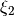
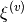
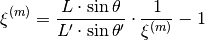
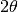

LoadVulcanCalFile dialog.
Table of Contents
Loads set of VULCAN’s offset files into up to 3 workspaces: a GroupingWorkspace, OffsetsWorkspace and/or MaskWorkspace.
| Name | Direction | Type | Default | Description |
|---|---|---|---|---|
| OffsetFilename | Input | string | Mandatory | Path to the VULCAN offset file. Allowed extensions: [‘.dat’] |
| Grouping | Input | string | 6Modules | Choices to output group workspace for 1 bank, 2 banks or 6 modules. Allowed values: [‘6Modules’, ‘2Banks’, ‘1Bank’] |
| BadPixelFilename | Input | string | Path to the VULCAN bad pixel file. Allowed extensions: [‘.dat’] | |
| WorkspaceName | Input | string | The base of the output workspace names. Names will have ‘_group’, ‘_offsets’, ‘_mask’ appended to them. | |
| BankIDs | Input | int list | Bank IDs for the effective detectors. Must cover all banks in the definition. | |
| EffectiveDIFCs | Input | dbl list | DIFCs for effective detectors. | |
| Effective2Thetas | Input | dbl list | 2 thetas for effective detectors. | |
| EventWorkspace | InOut | EventWorkspace | Optional input/output EventWorkspace to get aligned by offset file. It serves as a verifying tool, and will be removed after test. |
This algorithm loads a set of VULCAN’s calibration files, including detector offset file and bad pixel file, and convert VULCAN’s offset on time-of-flight to Mantid’s offset on d-spacing.
By this algorithm, Vulcan’s calibration file can be converted to the standard calibration file for SNSPowderReduction.
There are () rows in the offset file. In each row, the first value is the pixel ID; and the second is inner-module offset.
For each module, it starts from row  , where
, where  is the module ID starting
from 0.
is the module ID starting
from 0.
 : pixel ID, offset (first detector in module)
: pixel ID, offset (first detector in module) : pixel ID, offset
: pixel ID, offset : pixle ID, offset (last detector in module)
: pixle ID, offset (last detector in module) : pixel ID, offset (detector is not used)
: pixel ID, offset (detector is not used)In bad pixel file, each line contains one and only one integer corresponding to the detector ID of a bad pixel. The bad pixels will be masked in the output MaskWorkspace.
With VULCAN’s offsets in TOF, the calibration is done as the following.


where (1)  is the inner-bank correction, (2) is the inner module (inter-bank) correction,
and (3)  is the inter-module (inner-pack) correction.
is the inner-bank correction, (2) is the inner module (inter-bank) correction,
and (3)  is the inter-module (inner-pack) correction.
Be noticed that the correction factor recorded in VULCAN’s offset file is  .
Thus if we define
.
Thus if we define  , then time focussing formula used by VUCLAN’s IDL code
is
, then time focussing formula used by VUCLAN’s IDL code
is 
Therefore, by defining  as the VULCAN’s offset, and  as
the Mantid’s offset, then we can convert VULCAN’s offset to Mantid’s as
as
the Mantid’s offset, then we can convert VULCAN’s offset to Mantid’s as

VULCAN uses effective DIFC and  for the effective detector to be focussed on. It follows the Bragg rule for time-of-flight, i.e.,

print ("LoadVulcanCalFile is obsolete and will be deprecated soon")
Output:
LoadVulcanCalFile is obsolete and will be deprecated soon
Categories: AlgorithmIndex | DataHandling\Text | Diffraction\DataHandling
C++ source: LoadVulcanCalFile.cpp (last modified: 2019-06-05)
C++ header: LoadVulcanCalFile.h (last modified: 2018-10-05)